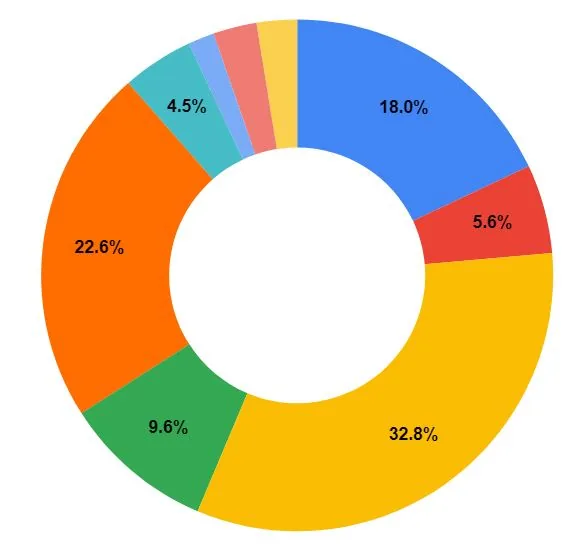

2023 Q2-Q4 自由工作生存報告，不被掐著脖子工作的自由
寫在前面：
自由工作在2023年底滿 2 年了！今年間每次想記錄點什麼時，礙於該季還沒過完、決定再緩緩，有空寫時又是尷尬的時間點，索性通通在年底一起紀錄。
2023年的起點→〈階段回顧｜2023 Q1 生存報告，休息和啟程〉
工作來源＝人脈ｘ做人
第一年自由工作時，案源仰賴前同事與友人，大多的合作延續過去還在職時的專案（只是自己的角色有所改變）或專業度不高的支援工作，就算有新的嘗試，也因為是與熟悉的夥伴合作，而安心踏實。今年因為一些機緣、巧合以及自己的主動爭取，展開了與以往截然不同的工作類型與型態。
仔細想來，這些確實也都是人脈的一種，比如碰巧發現彼此有共同朋友，（或許）更容易建立信任關係，而得以成為朋友、進一步變成工作夥伴，而讓合作關係延續甚至開展其它機會，就是靠自己的工作表現與關係經營了。今年對此特別有感觸，有些合作嘎然而止，有些關係持續加溫趨向穩定。
越過焦慮的山丘，擁有不被掐著脖子工作的自由
工作風格的迥異、溝通落差造成嫌隙，或者是做了才發現自己並不喜歡的工作……面對這些狀況，意外發現自由工作的重要價值之一––給予自己心態豁達的權利。
當收入來自好幾個工作，就像雞蛋放在好幾個籃子裡，面對老闆／合作夥伴所提出的不合理要求或意見不合時，不再像專職工作一樣，總有一百種委曲求全的理由，而且這些理由也不單純是自己嚇自己，是實實在在的「離職就會面臨餓死的風險、做了（某事）就會在公司社會性死亡」。
並不是說自由工作就可以隨興地以「說走就走」相逼，而是至少可以先認知到這個合作關係，雙方是對等且相互需要的。擁有這樣的認知，才能讓自己勇敢、自在地表達想法，藉由對等的態度相處，建立平等關係。

這樣的好處在於，避免被過分要求、權益受損，同時展現個人的工作態度與價值––不只是擔任一個被動、聽命行事的執行角色，而是一個有想法、可信賴、主動解決問題的合作夥伴；而次要的，當被授權更多、更高的工作掌控權，也可能因此擁有更彈性自由的工作時間。
另一方面，與合作夥伴有衝突時，也能不怯場地溝通，因為就算最終終止合作，生活也不會立刻陷入困頓。這樣巨大的安心感，足以讓許多事情能以讓自己舒服的方式運作，事實上也可以說，這是一種篩選工作夥伴的機制。
「時間」對自由工作者來說至關重要，決定把時間用來做什麼事可以有很多種理由，但那些理由應該都帶有某種正向影響，比如與相處順利愉快的夥伴合作、能夠對社會或他人帶來價值的工作成果、對自我成長或探索富有意義的經驗，或者能夠與某人建立關係……等，即便是以終止合作收場的工作，都不會覺得是一種浪費。
不過心態調整就是另一回事了，那些對談的記憶、對方責怪甚至感到麻煩的神情與話語，或嚴肅或尷尬的衝突現場，總得花上一些時間消化，一次次告訴自己：「沒有誰對誰錯，我們只是不適合。」這是我作為自卑者，要持續練習的課題。
今年度的代表詞：「活在當下」
三月參加職涯探索的講座時與講者簡短聊過，被認為「你就差那麼一點點就能想清楚了」之後，發現自己還是不知道該往何處探求，也對於總是積極嘗試感到疲累不堪，於是決定放過自己，好好專注在當下的生活與工作就好。
自由工作來到第二年，開始對自己有一些要求和想要達到的目標，包含希望年薪達到一定水準、自己想做的事要有所實踐和推進等等，然而今年的工作變動大、有不少新的合作關係（舊的跟新的大概6:4），於是心神也僅僅足以搞定這些新工作、維持一定程度球來就打（有錢就賺）的彈性狀態，以及接受遊玩邀請的餘裕（大多也是沒做過的玩樂），活在當下似乎是一種必然的結果。
整體而言，儘管並不曉得這些工作與社交活動，是否仍持續帶領我前往某個期待到達的遠方，但一切新鮮有趣、充實飽滿，痛苦很少而快樂很多，對此充滿感恩。
用倒數的心情過日子
在台北住了約十年，今年因緣際會之下搬到了新竹，一切其實充滿了不確定性，如同沒有與誰建立長期雇傭關係的自由工作一樣，沒有必須待在何處的承諾或羈絆。因而，「穩定」變成一種暫時的狀態。
比如房子的租約在年中到期，如果沒有必須留下的理由，那麼離開也會是一個可能的選擇。如果選擇離開，那麼每週一次的上課只剩下20次、每月一次的聚會只剩4次，和某人見面的日子屈指可數……用倒數的心情過日子，讓一切都珍貴了起來。
有一種透過階段目標來規劃人生的方式，比如說目標是「36歲要生小孩」，那35歲就要結婚，與對象交往3年才放心結婚的話，那32歲要開始交往。找對象不見得能一擊必中，需要有試誤的機會，一推算出來，你就會知道現在自己該不該積極趕進度。
這樣的推算能看見實際狀況，有助於更具體地規劃人生，另一方面，也會更珍惜此時此刻自己所擁有，對一切的人與事更寬心、更柔軟，更加活在當下。
留言
電子郵件不會公開，只用來辨識留言者。第一次留言會先經過審核，之後同一個電子郵件的留言會直接顯示。本留言區以 Cloudflare Turnstile 防止垃圾留言。